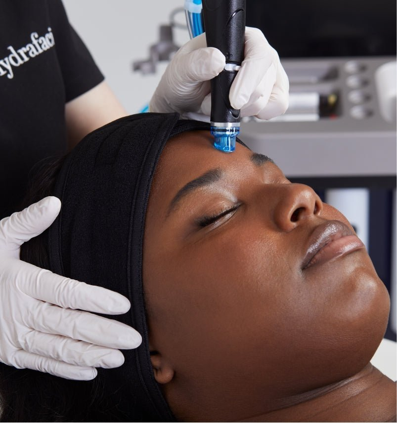

Best Hydrafacial in Oakland: Why GLOWDEGA Sets the Standard

Hadiyah Daché, licensed cosmetologist & esthetician
Facials & Treatments
4 min
← All articlesThe Book →Friendly reminder: this post contains affiliate links, which help support the Glowdega Archive. If you buy through them, I may earn a commission at no extra cost to you.
Forget endless scrolling through "Hydrafacial near me" searches. You’ve just found the proverbial fountain of youth! Glowdega’s esteemed Hydrafacial® treatments will give your skin a 5-star, platinum experience. With a machine that can be customized to perform well over 100 different treatments and the wide breadth of knowledge and experience from the estheticians at Glowdega, you're guaranteed glowing results every time! But why is the Hydrafacial® so good and why does getting one at Glowdega make it even better? Let us break things down for you.
What is a Hydrafacial? THE SCIENCE BEHIND THE SERVICE
The innovative Hydrafacial treatment stands as a testament to the fusion of technology and skincare. Its patented Vortex-Fusion delivery system immediately sets it apart from traditional facials. While other treatments make you choose between exfoliation, extraction, or hydration, our Hydrafacial says "Why not all three?" This unique technology is able to pull off painless extractions with deep epidermal hydration infusion tailored to specific skin concerns, simultaneously.
Ideal for a broad range of skin types, the Hydrafacial addresses various skin concerns, making it a versatile choice for many estheticians. It's particularly beneficial for those struggling with dryness, dullness, and uneven texture, as it replenishes moisture and enhances the skin's overall radiance. It also targets more specific issues like fine lines, wrinkles, enlarged pores, and even mild acne, thanks to its ability to deeply cleanse and gently resurface the skin. With its customizable approach, the Hydrafacial® provides a personalized treatment, ensuring that each individual's unique skin needs are met, making it a sought-after service for those seeking a non-invasive yet effective solution to their skin concerns.
Hydrafacial Benefits, Explained
Understanding of the skin's structure and function is imperative to understanding why skin a Hydrafacial is so beneficial in your skin care journey. Comprising multiple layers, the skin is far more than a simple exterior covering. It’s a complex organ, responsible for protecting us against environmental aggressors, regulating body temperature, and playing a crucial role in our overall health. The outermost layer, the stratum corneum, acts as a barrier, both keeping essential moisture in and harmful elements out. When this layer is well-hydrated, it remains flexible and resilient, warding off irritants and maintaining a healthy appearance. Scientific studies have shown that well-hydrated skin is less prone to issues like eczema, dermatitis, and even the visible signs of aging.
The best benefit of a Hydrafacial is that it’s not just another pretty treatment—it's FDA-cleared technology delivering measurable results. We're talking real, visible improvements backed by clinical studies: a 32% boost in skin brightness after just three sessions, noticeable fine line reduction in 2-3 treatments, and immediate improvement in skin firmness you can see and feel.
There is zero downtime involved with a Hydrafacial and no need to book multiple appointments for different skin concerns because you can cater to all of your skin concerns in one session. With customizable serum boosters, you choose how you want to glow. And that patented vortex technology allows for painless extractions every single time. The best part? You'll literally see what's been hiding in your pores in the treatment's collection jar. There’s so many benefits to a Hydrafacial treatment! It’s truly skincare science at its finest.
THE GLOWDEGA® DIFFERENCE
The perfect Hydrafacial® starts with the right skin prep. And no one in Oakland is doing it better than us! We begin with our signature Clean Slate technique which combines both lymphatic and trigger-point massage with a traditional double cleanse. This helps increase blood flow to the face keeping the skin lively for the actual Hydrafacial treatment, and removes any impurities from the day. Next, we dermaplane the skin (if the client is a candidate) to really enhance the glow you receive at the end of your treatment. We follow this with a very mild enzyme to help soften stubborn extractions. This ensures that the extraction step of the Hydrafacial® is successful and painless for you! Once we start the Hydrafacial process, we customize the tips we use, extraction solutions, and boosters based on your skin. Each experience at Glowdega is entirely unique to you!
Clients who are not suitable candidates for dermaplaning receive our firming and tightening "Glowtox" enzyme treatment or an Oxygen Treatment prior to beginning the Hydrafacial process. Those who opt for a more in-depth spa experience receive an extended lymphatic drainage massage via facial cupping, and complete the cleansing and exfoliation portion of the Hydrafacial with our diamond-tip for wet microdermabrasion. We include LED treatments in all of our Hydrafacial treatments.
Another difference with us is that we use a custom hydrating booster with all of our Hydrafacial treatmentsat no extra charge to the client. So most of our clients receive two boosters per service. Most other spas charge clients per booster used which can increase costs up to $200 per service. In this era of inflation and financial insecurity, the last thing we want to do is nickel and dime our customers. We just want to focus on results.
Lastly, we conclude each Hydrafacial treatment with our signature finishing products that our clients have coined the "72-hour Glow". Want to see what the hype is all about? Book with us. We promise we're worth it.
HOW TO BOOK A HYDRAFACIAL® AT GLOWDEGA
Hydrafacial® treatments are open to both New and Returning Clients at Glowdega. Please note: we do not provide dermaplaning on new clients, our "Glowtox" or Oxygen Treatment is performed instead. You can click here to get started.